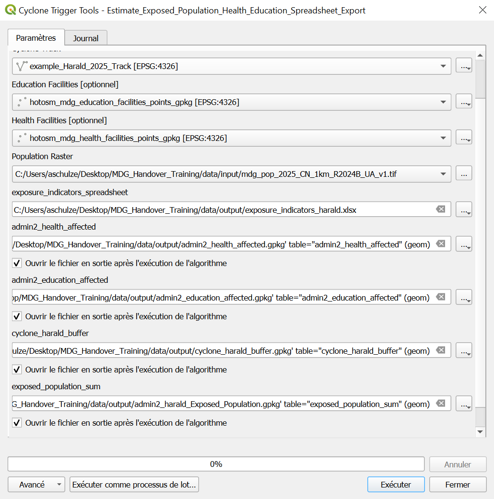

Ejercicio 6: Exportación de resultados de modelos para el equipo de operaciones#
Características del ejercicio#
Tipo de ejercicio de capacitación:
Este ejercicio puede utilizarse tanto en la capacitación en línea como en la presencial.
Puede realizarse como ejercicio guiado o individualmente a modo de autoestudio.
Programa de ejercicios:
Este ejercicio forma parte del programa de ejercicios de análisis de ciclones de acción anticipatoria de Madagascar.
Duración estimada del ejercicio:
Artículos relevantes en Wiki
Objetivo del ejercicio:
Aina, experta en SIG de la Cruz Roja Malgache (CRM), se prepara para la próxima temporada de ciclones. Quiere mejorar la capacidad de su equipo para actuar con rapidez una vez pronosticada una tormenta automatizando los análisis clave en QGIS. Esto incluye la estimación de las poblaciones expuestas, la identificación de los servicios afectados como la sanidad y la educación, y la evaluación de si se puede llegar a los puestos sanitarios desde los almacenes clave en un plazo crítico de 10 horas. El objetivo es preparar un flujo de trabajo de análisis y visualización de principio a fin que pueda respaldar una acción anticipatoria rápida y basada en datos antes de que un ciclón toque tierra.
Instrucciones para capacitadores#
Rincón del instructor
Preparar la capacitación
Tómese el tiempo para familiarizarse con el ejercicio y el material proporcionado.
Prepare una pizarra. Puede tratarse de una pizarra física, un rotafolio o una pizarra digital (p. ej., una pizarra virtual de Miro) en la que los participantes pueden añadir sus hallazgos y preguntas.
Antes de comenzar el ejercicio, asegúrese de que todos hayan instalado QGIS y, hayan descargado y descomprimido la carpeta de datos.
Consulte ¿Cómo realizar capacitaciones? para obtener algunos consejos generales para impartirlas.
Impartir la capacitación
Introducción:
Presente la idea y el objetivo del ejercicio.
Proporcione el enlace de descarga y asegúrese de que todos los participantes hayan descomprimido la carpeta antes de comenzar las tareas.
Guía paso a paso:
Muestre cada paso y explíquelo al menos dos veces y de manera pausada para que todos puedan ver lo que está haciendo y aplicarlo en su propio proyecto de QGIS.
Pregunte con regularidad si alguien necesita ayuda o si todos están siguiendo el ejercicio, para asegurarse de que todos comprenden y realizan los pasos por sí mismos.
Mantenga una actitud abierta y paciente ante cualquier pregunta o problema que pueda surgir. Los participantes están haciendo varias tareas a la vez: prestan atención a sus instrucciones y las aplican en su propio proyecto de QGIS.
Cierre de la sesión:
Dedique tiempo al final del ejercicio a cualquier problema o pregunta relacionada con las tareas que pueda surgir.
Reserve algo de tiempo para preguntas abiertas.
Datos disponibles#
Descargue todos los conjuntos de datos aquí, guarde la carpeta en su ordenador y descomprima el archivo.
Contexto: Aina apoya a los responsables de la toma de decisiones
Después de producir mapas y elementos visuales, Aina a menudo recibe solicitudes del equipo de operaciones: “Puede enviarnos los datos en formato de tabla?”
En lugar de exportar estas tablas manualmente cada vez, Aina quiere automatizar este paso dentro de su modelo, asegurando que cada ejecución del modelo produzca archivos de datos claros y listos para usar.
En esta tarea, ayudará a Aina a ampliar su modelo para exportar capas seleccionadas.
Uniremos las siguientes capas paso a paso:
admin2_health_affected_pct: Contiene el número total de centros de salud, el número de centros de salud afectados y el porcentaje de centros de salud afectados.admin2_education_affected_pct: Contiene el número total de instalaciones educativas, el número de instalaciones educativas afectadas y el porcentaje de instalaciones educativas afectadas.exposed_population: Contiene la población total por distrito y la población expuesta de la etapa de estadísticas zonales.
Tareas#
Abra su modelo
Abierto
Estimate_Exposed_Population_Health_EducationGuarde una nueva versión como:
Estimate_Exposed_Population_Health_Education_Spreadsheet_Export
Una los datos de salud y educación en una sola capa
En los Algoritmos, busque
Join Attributes by Field Value.Añada una descripción:
Joindre santé et éducation dans une seule couche par ADM2Configure el algoritmo de la siguiente manera:
Capa de entrada:
admin2_health_affected(seleccionar de Salida de algoritmo)Capa de entrada 2:
admin2_education_affected(seleccione de Salida de algoritmo)Campo de tabla:
ADM2_PCODECampo de tabla 2:
ADM2_PCODECampos de capa 2 para copiar: Deje vacío (todos los campos serán copiados)
Tipo de unión: Tome los atributos de la primera característica coincidente solamente (uno a uno)
Deje la salida como Salida del modelo

Configuration de l’opération : joindre les données de santé et d’éducation par le champ ADM2_PCODE afin de combiner les résultats dans une seule couche.#
Unir el resultado con los datos de población Ahora, una el resultado del paso anterior (salud + educación) a los datos de población expuestos.
Añada un segundo algoritmo
Join Attributes by Field Valueal modeloAñada una descripción:
Joindre les données de population avec les indicateurs santé et éducationConfigure el algoritmo de la siguiente manera:
Capa de entrada:
exposed_population(seleccionar de Salida de algoritmo del paso Estadísticas zonales)Capa de entrada 2: Producto del Paso 2 (salud + educación)
Campo de tabla:
ADM2_PCODECampo de tabla 2:
ADM2_PCODECampos de capa 2 para copiar: (Ingrese los siguientes nombres de campo exactamente como se muestra, separados por comas, sin espacios)
count_health_total;sum_exposed_health;pct_exposed_health;count_education_total;sum_exposed_education;pct_exposed_education
Tipo de unión: Tome los atributos de la primera característica coincidente solamente (uno a uno)
Deje la salida como Salida del modelo

Configuration de l’opération : joindre les données de population avec les indicateurs de santé et d’éducation.#
Tip
Dónde encontrar los nombres de las columnas?
Abra las tablas de atributos de las salidas health_total_per_admin2, sum_exposed_healthsites_POI y admin2_health_affected_pct en QGIS.
Observe los encabezados de columna para encontrar los nombres exactos de los campos que desee copiar.
Warning
Los espacios invisibles romperán la union.
Si un nombre de columna como count_health_total tiene un espacio final invisible, la unión fallará silenciosamente.
Copie siempre los nombres de los campos directamente de la tabla de atributos para evitar errores.
Exporte resultados a una hoja de cálculo
En la caja de herramientas, busque
Export to spreadsheety haga doble clic para abrir.Añada una descripción:
Exporter les données de population, d'éducation et de santé dans un seul tableauConfigure la herramienta de la siguiente manera:
Capa de entrada: Seleccione la salida del Paso 3 de Salida de algoritmo
Hoja de cálculo:
exposure_indicators_spreadsheetHaga clic en
Okpara agregarlo al modelo. Una vez que ejecute el modelo, este paso generará automáticamente una hoja de cálculo con todos los indicadores relevantes listos para el equipo de operaciones.

Exportador tous les indicaurs (población, sanidad, educación) vers un tableau unique au format tableur.#
Valide su modelo ampliado y guárdelo.
Haga clic en el botón ✔️ Validate Model para verificar si hay errores.
Guarde de nuevo en:
Estimate_Exposed_Population_Health_Education.model3
Ejecute el modelo
Haga clic en el botón ▶️ Run en la esquina superior derecha de la ventana del modelador gráfico.
Entrada:
Haga clic en los tres puntos de cada conjunto de datos de entrada y seleccione la entrada correcta:
Cyclone Track→ seleccione el GeoJSON de la trayectoria de la tormenta (por ejemplo,Harald_2025_Track.geojson).Population Raster→ seleccione el archivo ráster WorldPopAdmin Boundaries→ seleccione la capa Admin 2 (por ejemplo,MDG_adm2.gpkg)Health Facilities→ seleccione el conjunto de datos de puntos para los centros de salud.Education Facilities→ seleccione el conjunto de datos de puntos para las escuelas
Salida:
Guarde todas las capas de salida en la carpeta de salida y utilice los nombres que se indican a continuación.
admin2_health_affacted->
admin2_health_affectedadmin2_education_affected->
admin2_education_affectedcyclone_harald_buffer->
cyclone_harald_bufferexposed_population_sum->
admin2_harald_Exposed_Populationexposure_indicators_spreadsheet->
exposure_indicators_harald
Haga clic en Run para ejecutar el modelo completo.

Vue du modeleur graphique avec l’étape d’exportation vers un tableau ajoutée au modèle.#
{kind=link}

Fenêtre de configuration pour exécuter le modèle avec l’option d’export vers un tableau.#

Résultats finaux du modèle exportés dans un tableau prêt à être utilisé.#